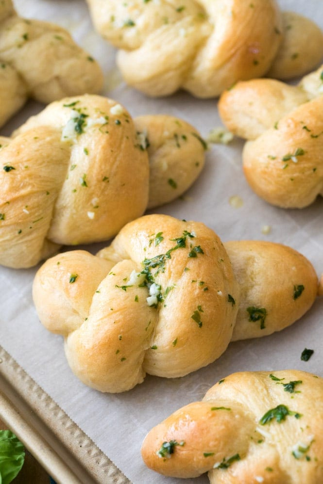

Description:
A homemade Garlic Knot recipe that'll knock your socks off. I reccomend a double batch of this stuff, because you'll eat one fresh out of the oven and before you know it there will be none left.
This whole thing comes together pretty dang quick as well, clocking in at about 30 minutes from start to finish.
ingredients:
Instructions:
- Preheat oven to 400F (205C) and line a baking sheet with parchment paper. Set aside.
- In a large bowl, combine 1 cup (125g) of flour, instant yeast, sugar, salt, and garlic powder and stir well.
- Add olive oil and warm water and use a wooden spoon to stir until all ingredients are well-combined.
- Gradually add another 1 cup (125g) of flour. Add any additional flour as needed (I've found that sometimes I need as much as an additional 1/3 cup), stirring until the dough forms a cohesive, elastic ball and is beginning to pull away from the sides of the bowl. The dough will still be tacky but still should be manageable with your hands.
- Drizzle a separate, large, clean bowl generously with olive oil and use a pastry brush to brush up the sides of the bowl.
- Transfer your dough to prepared bowl and roll the dough through the oil until the entire surface of the dough is lightly coated with oil, then cover the bowl tightly with plastic wrap and place on top of your oven to rise for 30 minutes or until doubled in size.
- Once the dough has risen, use your hands to gently deflate it and transfer to a lightly floured surface. Form into a log about 15” long and cut into 9 even pieces.
- Roll each piece between your palms and slightly pull it to form a rope about 8” long (lightly dust the dough with flour if needed).
- Carefully tie each rope into a knot and place on prepared baking sheet. Lightly brush with olive oil if desired.
- Set tray on top of warm oven and let garlic knots rest/rise for 5 minutes before baking.
- Transfer to oven and bake on 400F (205C) for 13 minutes or until just beginning to turn a light golden brown.
- While garlic knots are baking, combine butter and garlic in a small saucepan over medium/low heat. Cook until butter is melted and garlic is fragrant.
- Remove from heat and stir in minced basil. Once Garlic Knots have finished baking, use a pastry brush to generously brush garlic butter mixture over each knot. Sprinkle with grated parmesan, if desired. Serve while warm.